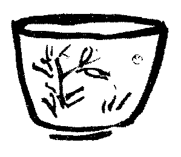

今年も高島屋であなたの陶器展を見せてもらいました。あなたは会場におられなかったようでした。
また例の病いを出して頭ごなしに言うわけではありませんが、あなたの作陶は土の仕事がまずいですね。高台などと来るとまるで成っていませんよ。
しかし、新しい好みの釉薬となると、これはいつもながら、あなたの独擅場だけあって、うまいものですね。ここまで来られたら、こんどは寂びた釉、侘びた釉に手をつけてもらうんですね。
それはそうとあなたの作品には、英人リーチ、李朝、柳説と、この三つの先入主があって、それが随分、今日のあなたに災いしていますね。
この先入主は、最初のあなたには益友であったでしょうが、今では却って邪魔ですね。ここらで一つ足を洗って方向をお転じになってはいかがです。
それから、あなた、失礼な話ですが、絵の力をもっともっとお付けにならんといけませんね。絵のことでは、あなた自身が随分不自由をしておいででしょう。僕はあなたが絵と書を十分に身にお付けになったらと、いつでも思いますよ。
僕はお宅で、たった一度しかあなたにお目にかかりませんけれど、お別れするとき随分好い感じを受けたんです。品の良いこと、素直なこと、若いことなどです。
それにあなたは今の作陶家中稀に見る芸術家肌であることがいいですよ。
帝展工芸の作陶家たちは質が悪いですね。袴もはかれるし、モーニングも着られますが、どう見ても、仕事になると職人は職人ですね。例外が多少ないでもありませんけど。
そこへ行くと、あなたでも、浜田、富本の両君でも、芸術家的なのが何より尊いですよ。これが根本ですからね。
しかし、世間では芸術家の仕事と職人の仕事を、同じようにしか見ない人がありまして困りますね。
ときに河井さん、陶器は何と言っても土の仕事ですよ。トトヤの茶碗が馬鹿値に売れるのも、古備前が高いのも、南蛮が喧しいのも、みな土の良さと土の仕事の美しさです。土の仕事さえものを言うなら絵がなくても、美麗な釉薬が掛からなくても、鑑る人はちゃんと鑑て、あらゆるものの上座に置いてくれています。絵や釉を着けるとしても、やはり、土台である土の仕事が物を言いますね。
僕は率直に言いますが、あなたでも、浜田、富本の両君でも、土の仕事は随分ご油断と粗忽があると思いますね。それから絵も字もいけませんね。しかし、今度の高島屋で見ると、あなたの草の絵は随分お手が上がったようです。これでは浜田君も富本さんも、もう敵ではありませんね。この調子ならぐんぐん上達しますでしょう。だが、もっと色々の絵が自由にならんと不自由ですね。同じ一つ絵を壺によし、盒子によし、茶碗にもと、無暗に一つの図をお着けになるのは、心細いじゃありませんか。殊に多数の作品を陳列した場合は、見っともよくはありませんね。と言って、たとえあなたがこのままであっても、それはあなたはあなたで立ってゆくことに心配はないでしょう。帝展連のように、嫌らしい変なものばかり作っていても、それにはそれのお客がありますから、世の中は随分のんきなものですが……。
僕の望みはせっかくのことだから、あなたにもっともっと高い所の芸術家になって欲しいのです。そうして共に語りたいのです。まあ考えてごらんなさい。あなたでも浜田、富本の両君でも、好者側がいつまでも干渉しないで、このまま放って置いたとしたら、きっと六十の老輩に成っても、今日のように若い書生好みを遣ってお出でになるに違いないと僕は心配するんです。
今のあなた方の作品は、何と言ってもあなた方の年輩によって許されているんですよ。もし六十歳でこれを作っていてごらんなさい。恥ずかしいじゃありませんか。
そこで、あなたにこびりついている先入主を取り去ってしまいたいのです。倉橋君なども、この点、随分気にしていられるんですよ。無性に民芸のコピーを止めよと言うのではありません。どうせ何かを狙う以上は、やはりコピーをやることになるのですから、およそ世に喧しく言われている名作には、ひとわたり眼をお通しになって、コピーの範囲をお広めになってはいかがです。一つ所に十年勤続、二十年勤続は必ずしも名誉じゃないでしょうから。
あなたの温柔な性格は、美しいものには違いありませんが、創意創作を生んで行く人としては弱すぎるとも言えるのです。話は別ですが……。
とにかく、幼稚であなたより鑑賞眼の低い、つまらん賞玩家におだてあげられて、いい気持になってはだめですよ。実を言えば、新作品に感心するような人は、陶器でも絵でも本当にはわかる人じゃないですから油断してはいけません。それが証拠に、わかる人はめったに買いませんからね。釉もなく絵もなくて純金の地金よりも量目にして高価だという陶器もあるんですよ。金の相場はどうでもよいとしても、仮りにもそういうもののある以上は、どんなものかと熟視する気になってみてください。
そうして、今なさっている様々の仕事を顧みて、若さと幼稚さに気がつき、作家である自己を振り返られて、感慨に堪えんというふうになっていただけませんか。それにはあなたも個人作家である以上、個人作家として明瞭に
（昭和八年）
